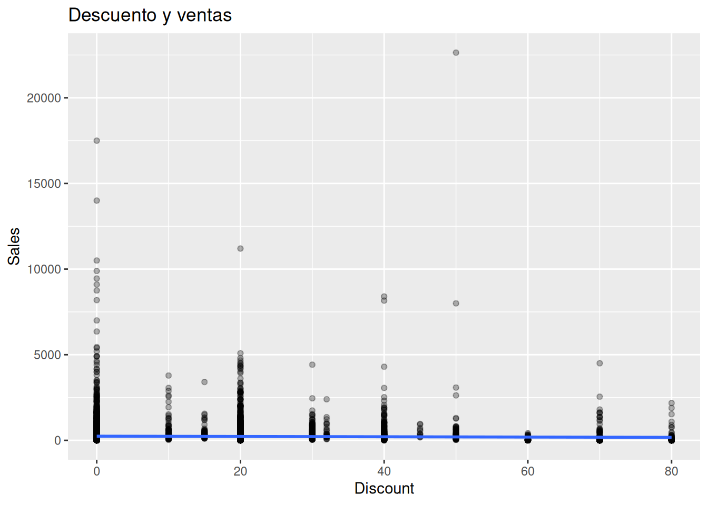
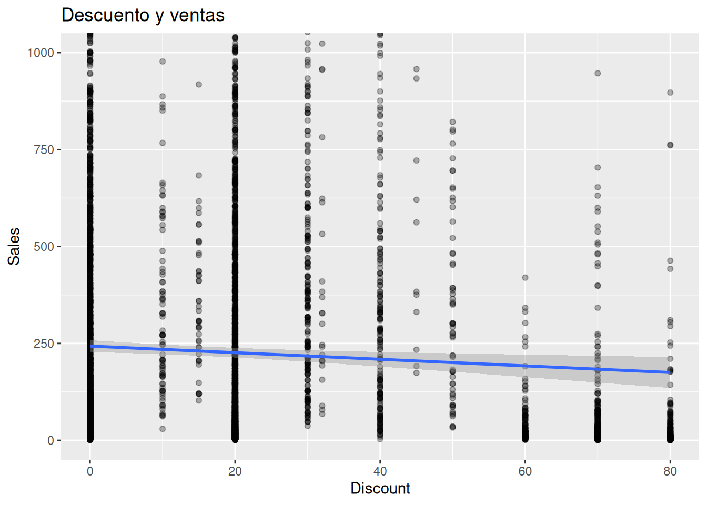
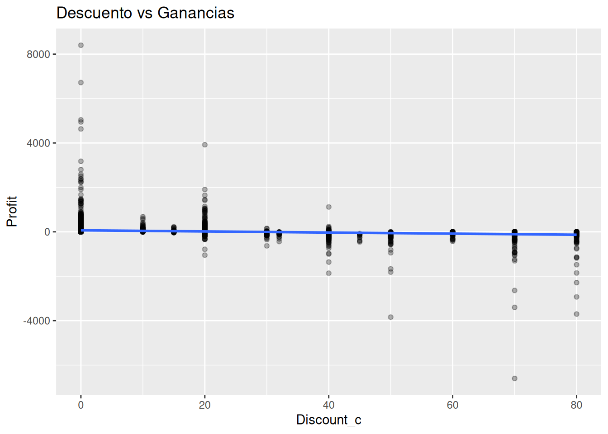
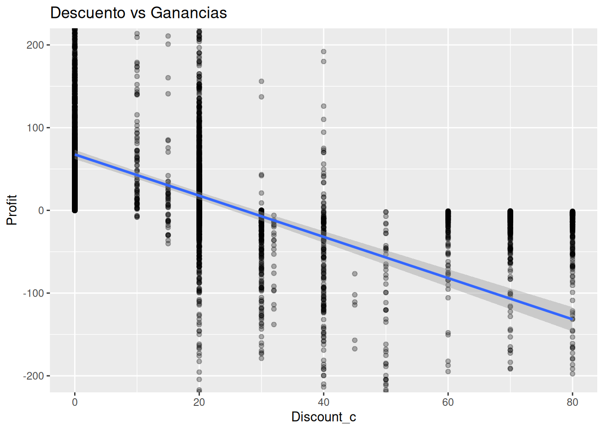
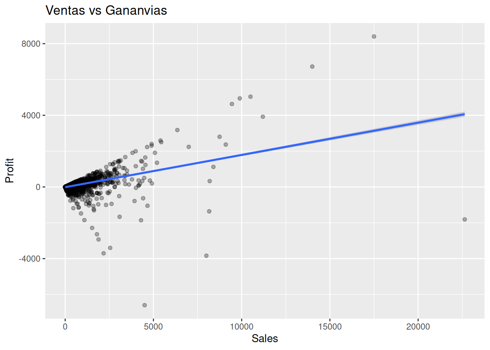
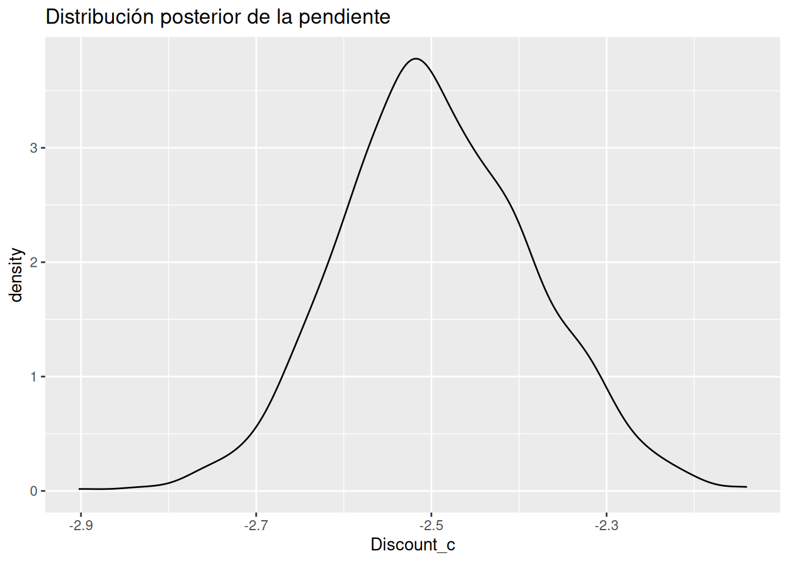

Hasta ahora hemos visto que los datos contienen variabilidad.
Las ventas cambian.
Los clientes se comportan de manera diferente.
Los resultados de una campaña nunca son exactamente iguales.
La incertidumbre aparece en todas partes.
Sin embargo, las empresas necesitan tomar decisiones.
Y para tomar decisiones suelen hacerse preguntas como:
¿Los descuentos aumentan las ventas?
¿Los descuentos reducen las ganancias?
¿Los pedidos grandes generan más beneficio?
¿Existe alguna relación entre ventas y profit?
Detrás de todas estas preguntas existe una misma idea:
buscar patrones en medio de la incertidumbre.
Pero aquí aparece una realidad importante.
Los datos reales rara vez siguen líneas perfectas.
Dos pedidos con exactamente el mismo descuento pueden producir resultados completamente distintos.
Dos productos con ventas similares pueden generar ganancias muy diferentes.
La realidad está llena de ruido, variabilidad y factores que no observamos.
Por eso necesitamos herramientas que nos permitan describir tendencias generales sin exigir perfección.
Una de las herramientas más útiles para hacerlo es la regresión.
¿Qué intenta hacer una regresión?
Imagina que observamos cientos o miles de pedidos.
Cada pedido tiene:
una venta (Sales)
un descuento (Discount)
una ganancia (Profit)
Si colocamos todos esos pedidos en un gráfico veremos una nube de puntos.
Algunos puntos estarán arriba.
Otros abajo.
Algunos muy alejados.
Otros agrupados.
La regresión intenta responder una pregunta sencilla:
¿Existe una dirección general dentro de toda esta dispersión?
No intenta encontrar una regla perfecta.
No intenta explicar cada observación individual.
Busca identificar una tendencia promedio.
Podemos pensar en ella como una línea que intenta atravesar una nube de puntos capturando el patrón general.
Por eso la regresión es una herramienta para pensar.
No una máquina de certezas.
Contexto de negocio
Antes de analizar relaciones, conviene entender algunos conceptos empresariales.
¿Por qué las empresas ofrecen descuentos?
Un descuento reduce temporalmente el precio de un producto.
Las empresas suelen utilizar descuentos para:
aumentar ventas
liquidar inventario
atraer nuevos clientes
responder a la competencia
A primera vista parece una excelente idea.
Si el precio baja, más personas podrían comprar.
Pero existe una pregunta importante:
¿vender más significa necesariamente ganar más?
No siempre.
Ventas versus ganancias
Muchos principiantes confunden estos conceptos.
Sales
Representa el valor vendido.
Es el dinero que entra por una transacción.
Profit
Representa la ganancia obtenida.
Es lo que queda después de considerar costos.
Una empresa puede aumentar ventas y simultáneamente reducir ganancias.
Por ejemplo:
vender más unidades
aplicar descuentos agresivos
reducir márgenes
Este tipo de situaciones genera trade-offs.
¿Qué es un trade-off?
Un trade-off aparece cuando mejorar algo implica sacrificar parcialmente otra cosa.
Por ejemplo:
más ventas
menos margen
o
menos ventas
mayor rentabilidad
Los negocios reales están llenos de estos equilibrios imperfectos.
Explorando relaciones visualmente
Antes de construir modelos siempre debemos mirar los datos.
Los gráficos suelen revelar patrones que las tablas no muestran.
Discount vs Sales
# Diagrama de dispersión que relaciona las ventas con los descuentossuperstore %>%ggplot(aes(x = Discount_c,y = Sales ) ) +geom_point(alpha =0.3) +geom_smooth(method ="lm",se =TRUE ) +#coord_cartesian(ylim = c(0, 1000)) +labs(title ="Descuento y ventas",x ="Discount",y ="Sales" )

# Diagrama de dispersión que relaciona las ventas con los descuentos# con zoom en el eje Ysuperstore %>%ggplot(aes(x = Discount_c,y = Sales ) ) +geom_point(alpha =0.3) +geom_smooth(method ="lm",se =TRUE ) +coord_cartesian(ylim =c(0, 1000)) +labs(title ="Descuento y ventas",x ="Discount",y ="Sales" )

Qué observar
¿Existe una tendencia visible?
¿La dispersión es grande?
¿Los descuentos altos producen siempre ventas altas?
Probablemente observarás algo importante:
existe muchísimo ruido.
Incluso con descuentos similares las ventas pueden variar enormemente.
Discount versus Profit
Esta relación suele ser una de las más interesantes del dataset.
# Diagrama de dispersión que relaciona el descuento vs las gananciassuperstore %>%ggplot(aes(x = Discount_c, y = Profit) ) +geom_point(alpha =0.3) +geom_smooth(method = lm,se =TRUE ) +labs(title ="Descuento vs Ganancias" )

# Diagrama de dispersión que relaciona el descuento vs las ganancias# con zoom en el eje de las Ysuperstore %>%ggplot(aes(x = Discount_c, y = Profit) ) +geom_point(alpha =0.3) +geom_smooth(method = lm,se =TRUE ) +coord_cartesian(ylim =c(-200, 200)) +labs(title ="Descuento vs Ganancias" )

Interpretación intuitiva
Aquí suele aparecer una tendencia negativa.
No significa que cada descuento produzca pérdidas.
Significa algo más sutil:
a medida que aumentan los descuentos, las ganancias tienden a disminuir en promedio.
Observa la palabra clave:
tienden.
No:
siempre
necesariamente
inevitablemente
Sales versus Profit
# Diagrama de dispersión y tendencia de las ventas vs las ganacias superstore %>%ggplot(aes(x = Sales, y = Profit)) +geom_point(alpha =0.3) +geom_smooth(method ="lm",se =TRUE ) +labs(title ="Ventas vs Gananvias" )

Aquí suele aparecer una asociación positiva.
Pero tampoco perfecta.
Algunos pedidos generan:
muchas ventas
poca ganancia
Otros generan:
ventas moderadas
ganancias elevadas
La realidad rara vez es lineal y limpia.
Introducción suave a la ecuación de regresión
Ahora sí podemos introducir la ecuación.
y = β0 + β1x + ϵ
No te preocupes por la notación.
La idea es mucho más sencilla de lo que parece.
Intercepto (β₀)
Es el punto de partida aproximado.
Representa el valor esperado de la variable respuesta cuando x vale cero.
Pendiente (β₁)
Describe cuánto cambia, en promedio, la variable respuesta cuando cambia la variable explicativa.
Es la parte más interesante del modelo.
Nos habla de la dirección de la relación.
Error (ε)
Representa todo aquello que el modelo no puede explicar.
Y eso es normal.
Los datos reales contienen:
ruido
variabilidad
factores ocultos
La existencia del error no es una falla.
Es una característica natural de la realidad.
Primer modelo bayesiano de regresión
Ahora construiremos un modelo sencillo.
Queremos estudiar:
¿Cómo se relaciona el descuento con la ganancia?
# Relacionar el descuento con la gananciamodelo_profit <-stan_glm( Profit ~ Discount_c,data = superstore,family =gaussian(),chains =2,iter =1000,refresh =0)
La fórmula se lee como:
explicar Profit utilizando Discount.
Nada más.
Resumen del modelo
print(modelo_profit) # produce:
stan_glm
family: gaussian [identity]
formula: Profit ~ Discount_c
observations: 9994
predictors: 2
------
Median MAD_SD
(Intercept) 67.5 2.9
Discount_c -2.5 0.1
Auxiliary parameter(s):
Median MAD_SD
sigma 228.6 1.7
------
* For help interpreting the printed output see ?print.stanreg
* For info on the priors used see ?prior_summary.stanreg
El resultado mostrará una distribución posterior para cada parámetro.
Lo importante no es encontrar un número exacto.
Lo importante es comprender qué valores parecen plausibles.
Interpretando pendientes
Supongamos que la pendiente posterior resulta negativa.
La interpretación adecuada sería:
✅ “Los datos sugieren una asociación negativa entre descuento y profit.”
No:
❌ “Los descuentos causan pérdidas.”
La diferencia parece pequeña.
Pero conceptualmente es enorme.
La primera frase reconoce incertidumbre.
La segunda afirma causalidad.
Y todavía no tenemos evidencia suficiente para hacerlo.
Interpretación: el intercepto dice que cuando el descuento es 0% la ganancia promedio esperada es 67.7 . Discount_c = -2.5 es la pendiente que se interpreta como que por cada 1 punto porcentual adicional de descuento , la ganancia promedio disminuye aproximadamente 2.5 dólares. Sigma nos dice que aunque cada punto porcentual de descuento disminuye 2.5 dólares de ganancias, hay 237 dólares de ganancias que no se pueden explicar por el descuento
Visualizando incertidumbre
Uno de los mayores beneficios del enfoque bayesiano es que podemos visualizar la incertidumbre directamente.
# Conocer la incertidumbre de la relación del descuento con las# gananciasposterior_interval( modelo_profit,prob =0.95) # produce:
Interpretación: cada 1% de descuento disminuye las ganancias entre 2.7 y 2.29 dólares. Sin embargo todavía hay entre 225 y 232 dólares de ganancias que no se pueden explicar por los descuentos
# Visualizar la distribución posterior de la pendienteposterior::as_draws_df(modelo_profit) %>%ggplot(aes(x = Discount_c) ) +geom_density() +labs(title ="Distribución posterior de la pendiente" )

Ahora podemos visualizar nuestras creencias actualizadas sobre la relación.
La pregunta deja de ser:
¿Cuál es la pendiente?
Y pasa a ser:
¿Qué pendientes parecen plausibles dados los datos?
Interpretación: El gráfico de la distribución posterior de la pendiente muestra que en el 95% de valores cada punto porcentual de descuento disminuye las ganancias entre 2.72 y 2.26 dólares con una media de disminución de lasganancias de 2.5 dólares por cada punto porcentual
Esa es una forma profundamente bayesiana de pensar.
Relación no significa causalidad
Esta es una de las ideas más importantes del libro.
Supongamos que encontramos:
descuentos altos
ganancias bajas
¿Podemos concluir que los descuentos causan pérdidas?
No necesariamente.
Podrían existir otros factores:
categoría del producto
región
competencia
promociones simultáneas
estrategia comercial
La regresión detecta asociaciones.
La causalidad requiere evidencia adicional.
Por ahora basta con recordar:
Ver una relación no equivale a demostrar una causa.
Reflexión bayesiana
La regresión es una herramienta para resumir patrones.
No elimina la incertidumbre.
La hace visible.
Cuando observamos una pendiente posterior estamos observando una distribución de posibilidades.
Eso nos obliga a pensar en términos de plausibilidad.
Y ese cambio de mentalidad es uno de los objetivos centrales del análisis bayesiano.
No buscamos certezas absolutas.
Buscamos mejores decisiones.
Ejercicios
Ejercicio 1
Construya un scatterplot para:
-Quantity versus Sales
Preguntas:
¿Existe una tendencia visible?
¿Es fuerte o débil?
¿Hay mucha dispersión?
Ejercicio 2
Construya un modelo:
Sales ~ Discount
Interprete la pendiente utilizando lenguaje probabilístico.
Ejercicio 3
Compare visualmente:
Discount vs Sales
Discount vs Profit
¿Las relaciones parecen similares?
¿En qué se diferencian?
Ejercicio 4
Obtenga el intervalo posterior de la pendiente para:
Profit ~ Discount
¿La incertidumbre es grande o pequeña?
Ejercicio 5
Busque una relación que le parezca interesante dentro del dataset.